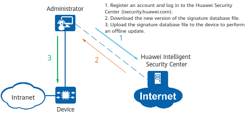

Understanding Signature Database Update
Signature Database Types
Signature Database Name |
Description |
|---|---|
Service awareness (SA) signature database |
The SA signature database describes the features of common applications or protocols on the network. These features are used by the application identification function to identify applications or protocols in traffic. |
Intrusion prevention system (IPS) signature database |
The IPS signature database describes the features of common attacks on the network in the form of IPS signatures. These features are used by the IPS function to detect intrusion behaviors. NOTE:
For the AR5700 series devices, this signature database is not supported only on the AR5710-S8P2X, AR5710-S8T2X, AR5710-S8T2X-LTE4EA, AR5710-S8T2S and AR5710-S10T1X2. |
Antivirus signature database |
The antivirus signature database describes the features of common virus files on the network. These features are used by the antivirus function to detect virus files. NOTE:
For the AR5700 series devices, this signature database is not supported only on the AR5710-S8P2X, AR5710-S8T2X, AR5710-S8T2X-LTE4EA, AR5710-S8T2S and AR5710-S10T1X2. |
Geolocation database |
The geolocation database describes the IP addresses of each region. These IP addresses are used for traffic control by region based on security policies. |
Predefined URL category database |
This database maintains a large number of URLs of mainstream websites and the URL categories. These URL categories cannot be modified or deleted and are used for URL filtering. After receiving a URL access request, the device queries the URL category to which the URL belongs. After finding the matching URL category, the device processes the request based on the category control action configured in the URL filtering profile. The predefined URL category database cannot be updated or modified. However, after remote URL query is configured, URL categories can be expanded through remote query. When a device is powered on for the first time, it automatically loads the predefined URL category database to its local cache. After receiving a URL access request, the device first queries its local cache for the URL category. If no matching category is found, the device queries the remote query server for the URL category. To ensure the validity of predefined URL categories in the cache, the cached content of predefined URL categories is continuously updated through remote query. NOTE:
For the AR5700 series devices, this signature database is not supported only on the AR5710-S8P2X, AR5710-S8T2X, AR5710-S8T2X-LTE4EA, AR5710-S8T2S and AR5710-S10T1X2. |
Methods of Updating a Signature Database
A signature database can be updated either online or offline. You can obtain the latest version of the signature database from Huawei Intelligent Security Center (isecurity.huawei.com).
- Online update
With the online update function, the device connects to the update server in Huawei Intelligent Security Center and checks whether a newer version of the signature database file is available. If there is a newer version, the device downloads it. Online update can be implemented manually or automatically. For details about the online update function, see Configuring Online Signature Database Update.
Figure 1 Online signature database update
- Offline update
With the offline update function, the administrator obtains the latest version of the signature database file from Huawei Intelligent Security Center and uploads it to the device. The administrator then performs an offline update on the device. For details about the offline update function, see Configuring Offline Signature Database Update.
Figure 2 Offline signature database update
The geolocation database can be updated only in offline mode.

The signature database update does not interrupt existing connections nor require device restart.